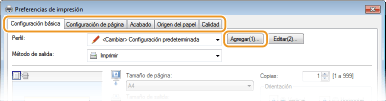
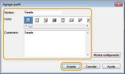
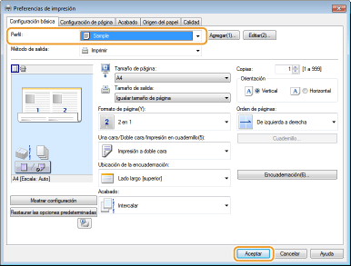

0KXF-01R
Especificar combinaciones de opciones como "Orientación horizontal a una cara en papel de tamaño A4 en modo ahorro de tóner" cada vez que imprima puede ser una tarea muy tediosa. Si registra estas combinaciones de opciones de impresión tan utilizadas como "perfiles", podrá especificar las opciones de impresión de una forma muy sencilla seleccionando uno de estos perfiles en la lista. Esta sección explica cómo registrar perfiles y cómo imprimir con ellos.
1
Cambie las opciones que desee registrar como perfil y haga clic en [Agregar].
Configure la impresión de acuerdo con las pestañas [Configuración básica], [Configuración de página], [Acabado], [Origen del papel] y [Calidad]. Varias opciones de impresión

2
Introduzca un nombre de perfil en [Nombre], seleccione un icono y haga clic en [Aceptar].
En caso necesario, introduzca comentarios sobre el perfil en [Comentario].
Haga clic en [Mostrar configuración] para ver las opciones que van a registrarse.

|
|
|
Edición de un perfil
Si hace clic en [Editar] en la parte derecha de [Perfil] en la pantalla que aparece en el paso 1, podrá cambiar el nombre, el icono o los comentarios de los perfiles que usted ya ha registrado. Sin embargo, no podrá editar los perfiles registrados con anterioridad.
|
Solo tiene que seleccionar el perfil que mejor se adapte a su objetivo y hacer clic en [Aceptar].

|
|
|
Cambios en las opciones del perfil actualmente seleccionado
Puede cambiar las opciones del perfil actualmente seleccionado. Además, las opciones cambiadas pueden registrarse como otro perfil.
|